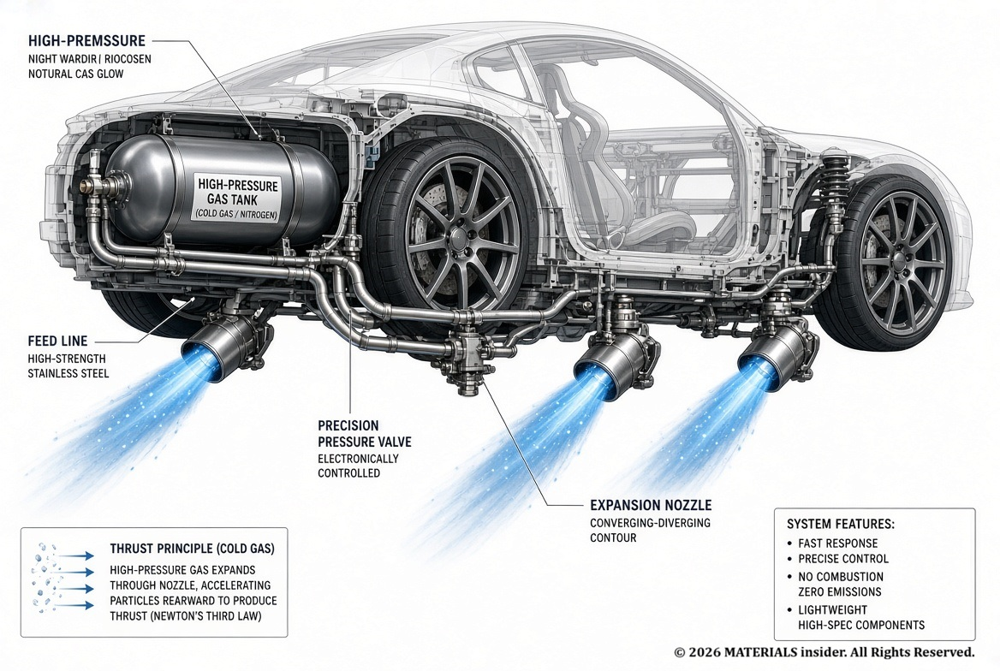
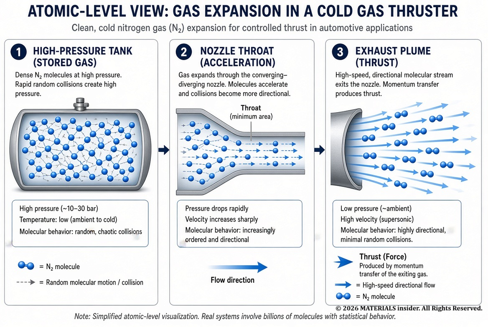
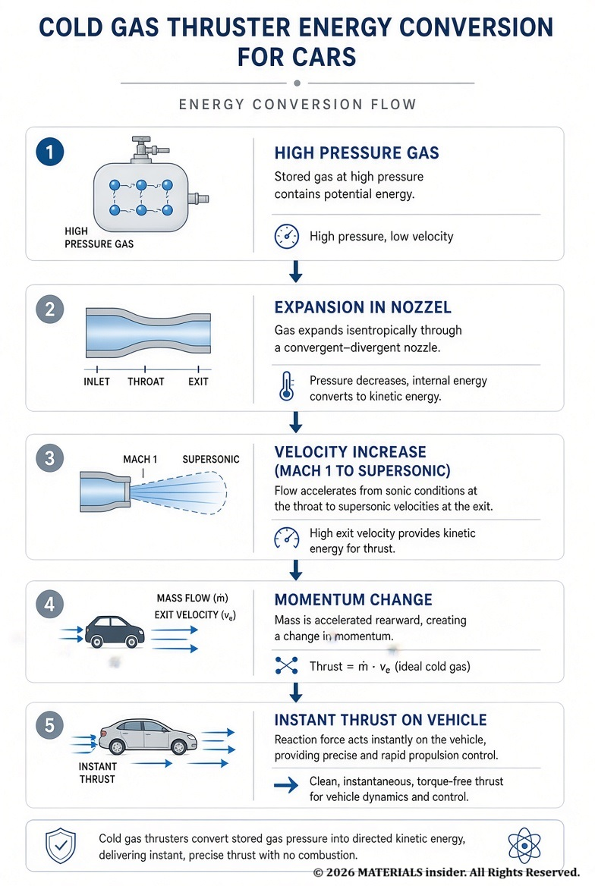
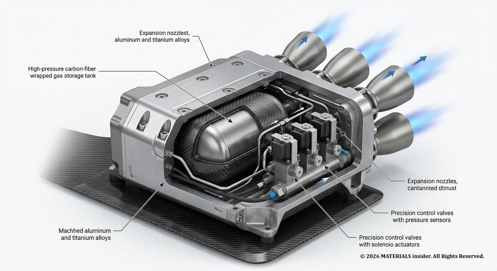
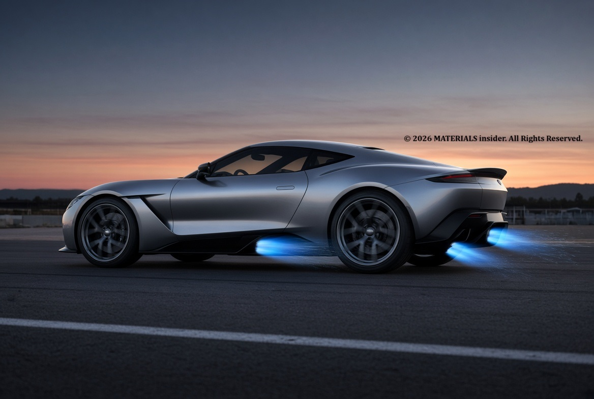
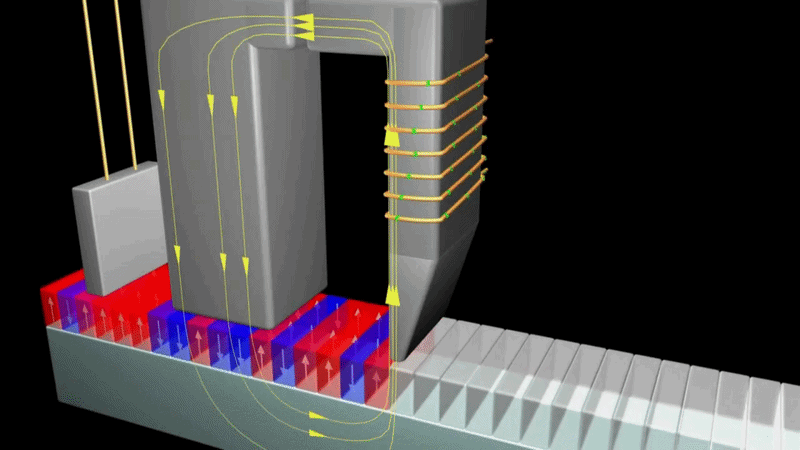

Cold Gas Thrusters: How Tesla’s Roadster Uses Compressed Air Instead of Fire
Cold gas thrusters use compressed inert gas to create thrust without combustion. See how Tesla demonstrated this technology on the next-generation Roadster and what happens at the molecular level.
Most people associate propulsion with engines that burn fuel. Yet Tesla has shown a very different approach: using cold gas thrusters that create thrust by simply releasing highly pressurized inert gas through precision nozzles — no combustion, no flames, no exhaust gases.
In late 2026 Tesla demonstrated a prototype of the next-generation Roadster fitted with cold-gas thrusters running on compressed air. The system is designed to deliver short, powerful bursts of acceleration and improved vehicle dynamics, especially for rapid orientation changes and performance enhancement.
How a Cold Gas Thruster Works in a Car

The principle is straightforward. A high-pressure tank stores compressed gas (in Tesla’s demonstration, air or nitrogen). When a high-speed valve opens, the gas expands rapidly through a carefully shaped nozzle. Pressure energy converts into kinetic energy, and the gas exits at high velocity.
According to Newton’s third law, the vehicle is pushed in the opposite direction. Because the thrusters can fire in different directions, they can assist with acceleration, braking, or even slight attitude adjustments of the vehicle body.

The system is extremely simple:
- High-pressure gas tank
- Fast-acting control valves
- Feed lines
- Expansion nozzles
There is no combustion chamber, no fuel injectors, and no complex cooling system. This makes the technology lightweight, responsive, and relatively easy to package in a performance car.

What Happens at the Molecular Level
Inside the storage tank, gas molecules are densely packed and constantly colliding with each other and the tank walls. These collisions create the high pressure that stores energy.
When the valve opens:
- Molecules rush from the high-pressure region toward the nozzle
- Random thermal motion becomes organized directional flow
- At the nozzle throat the gas reaches sonic speed (Mach 1)
- In the diverging section the flow becomes supersonic
- Pressure and internal energy drop while velocity rises sharply
The result is a high-speed stream of molecules leaving the nozzle, producing a clean, instantaneous thrust force on the car.

Why This Technology Interests the Automotive Industry
Cold gas thrusters offer several advantages that traditional combustion or even electric motors cannot match for short-duration events:
- Extremely fast response (milliseconds)
- No combustion products or heat
- Precise, repeatable force control
- Ability to apply force in multiple directions
- Relatively simple mechanical design
On a high-performance vehicle like the Tesla Roadster, these short bursts can improve launch performance, help stabilize the car during extreme maneuvers, or provide additional force vectors that conventional drivetrains cannot deliver as quickly.

Looking Ahead
Tesla’s Roadster demonstration is still in the prototype stage, but it highlights a growing interest in using pure gas expansion for short, high-power events in cars. Researchers continue to refine nozzle design, gas storage density, and valve response times to make the technology more practical for production vehicles.
Cold gas thrusters show that controlled movement does not always require fire. Sometimes the most elegant solution is simply the physics of compressed molecules escaping through a carefully engineered nozzle.
References
- Wang, Z., Guan, C., Wang, X., Zheng, W., & Su, L. (2024). Study on Characteristics of a High-Precision Cold Gas Micro Thruster. Engineering.
- Hauser, D.M., & Quinn, F.D. (2012). Simulation of a Cold Gas Thruster System and Test Data Correlation. NASA Technical Memorandum.
- Özden, A. (2019). Performance Characteristics of a Cold Gas Thruster with Real Gas Effects. Middle East Technical University.
- Liu, X., Li, D., Fu, X., Gao, Y., & Wang, X. (2023). Modeling of Rarefied Gas Flows Inside a Micro-Nozzle Based on the DSMC Method. Energies.
CCD Chips: Silicons That Turned Photons into Perfect Digital Eyes
CCD chips convert photons into electrons via the photoelectric effect in silicon, powering digital cameras, space telescopes, and X-ray detectors with near-perfect quantum efficiency and ultra-low noise.
Read Full Article →
Magnetism for Recording Devices
Magnetism in ferromagnetic materials is the hidden physics that lets hard disks & magnetic tapes store digital data for without power. Data storage is not an electronic process but a property of the materials.
Read Full Article →Share this article:
Advertisement 1/4
Advertisement 2/4
Advertisement 3/4
Advertisement 4/4